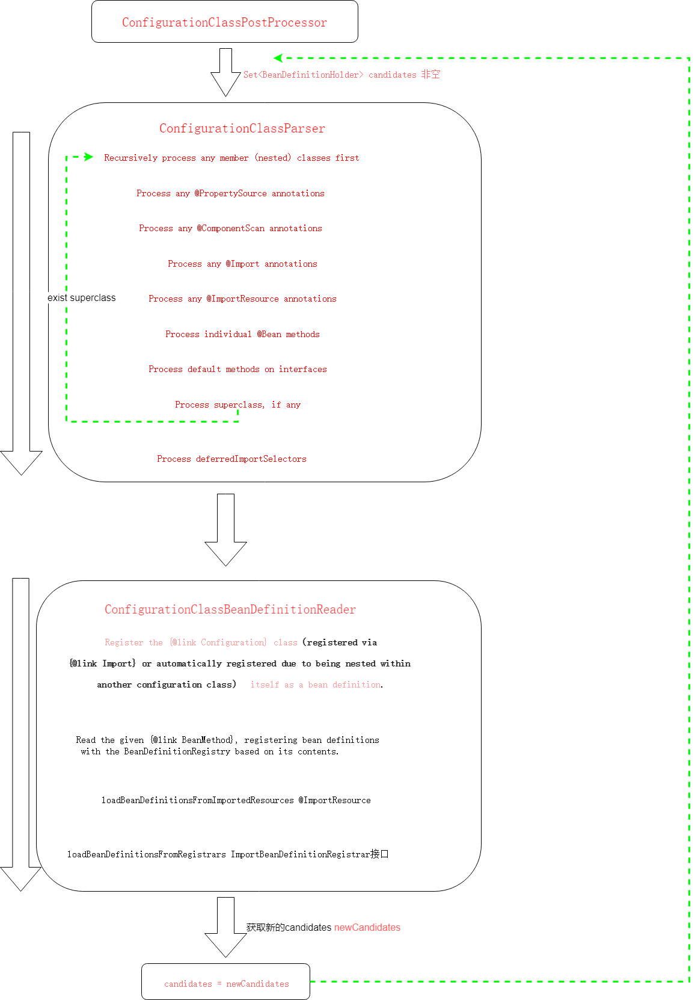
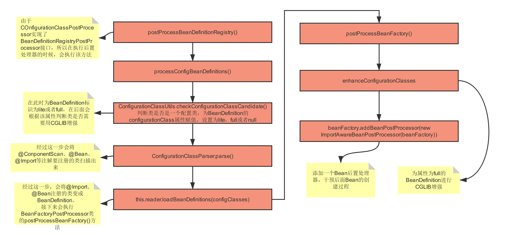

Spring中最最最重要的后置处理器ConfigurationClassPostProcessor
没有之一！
本文源码为spring5.2.9版本
疑惑
在阅读本文之前，可以先思考一下以下几个问题。
- @Configuration注解的作用是什么，Spring是如何解析加了@Configuration注解的类？
- Spring在什么时候对@ComponentScan、@ComponentScans注解进行了解析？
- Spring什么时候解析了@Import注解，如何解析的？
- Spring什么时候解析了@Bean注解？
整体感官


代码追踪
这里是接上篇文章AnnotationConfigApplicationContext(注解方式)初始化
里面的启动类为，后面会用到
new AnnotationConfigApplicationContext(Application.class);
ConfigurationClassPostProcessor 实现了 BeanDefinitionRegistryPostProcessor 接口，而 BeanDefinitionRegistryPostProcessor 接口继承了 BeanFactoryPostProcessor 接口，所以 ConfigurationClassPostProcessor 中需要重写 postProcessBeanDefinitionRegistry() 方法和 postProcessBeanFactory() 方法。 而ConfigurationClassPostProcessor类的作用就是通过这两个方法去实现的。
/**
* Derive further bean definitions from the configuration classes in the registry.
*/
@Override
public void postProcessBeanDefinitionRegistry(BeanDefinitionRegistry registry) {
int registryId = System.identityHashCode(registry);
if (this.registriesPostProcessed.contains(registryId)) {
throw new IllegalStateException(
"postProcessBeanDefinitionRegistry already called on this post-processor against " + registry);
}
if (this.factoriesPostProcessed.contains(registryId)) {
throw new IllegalStateException(
"postProcessBeanFactory already called on this post-processor against " + registry);
}
this.registriesPostProcessed.add(registryId);
processConfigBeanDefinitions(registry);
}
进入 processConfigBeanDefinitions
public void processConfigBeanDefinitions(BeanDefinitionRegistry registry) {
// configCandidates 配置类候选人
List<BeanDefinitionHolder> configCandidates = new ArrayList<>();
String[] candidateNames = registry.getBeanDefinitionNames();
for (String beanName : candidateNames) {
BeanDefinition beanDef = registry.getBeanDefinition(beanName);
if (beanDef.getAttribute(ConfigurationClassUtils.CONFIGURATION_CLASS_ATTRIBUTE) != null) {
//已经处理过了及 以及设置configurationClass属性 不再处理
if (logger.isDebugEnabled()) {
// log 日志
logger.debug("Bean definition has already been processed as a configuration class: " + beanDef);
}
}
// checkConfigurationClassCandidate()会判断一个是否是一个配置类,并为BeanDefinition设置属性为lite或者full。
// 在这儿为BeanDefinition设置lite和full属性值是为了后面在使用；lite和full均表示这个BeanDefinition对应的类是一个配置类
else if (ConfigurationClassUtils.checkConfigurationClassCandidate(beanDef, this.metadataReaderFactory)) {
//只有有@Configuration注解且不是代理类的才会加入
configCandidates.add(new BeanDefinitionHolder(beanDef, beanName));
}
}
// Return immediately if no @Configuration classes were found
if (configCandidates.isEmpty()) {
return;
}
// Sort by previously determined @Order value, if applicable
configCandidates.sort((bd1, bd2) -> {
int i1 = ConfigurationClassUtils.getOrder(bd1.getBeanDefinition());
int i2 = ConfigurationClassUtils.getOrder(bd2.getBeanDefinition());
return Integer.compare(i1, i2);
});
// Detect any custom bean name generation strategy supplied through the enclosing application context
SingletonBeanRegistry sbr = null;
if (registry instanceof SingletonBeanRegistry) {
sbr = (SingletonBeanRegistry) registry;
if (!this.localBeanNameGeneratorSet) {
// beanName的生成器，因为后面会扫描出所有加入到spring容器中calss类，然后把这些class解析成BeanDefinition类，此时需要利用BeanNameGenerator为这些BeanDefinition生成beanName
BeanNameGenerator generator = (BeanNameGenerator) sbr.getSingleton(
AnnotationConfigUtils.CONFIGURATION_BEAN_NAME_GENERATOR);
if (generator != null) {
this.componentScanBeanNameGenerator = generator;
this.importBeanNameGenerator = generator;
}
}
}
if (this.environment == null) {
this.environment = new StandardEnvironment();
}
// Parse each @Configuration class
// 定义一个解析器，解析所有加了@Configuration注解的类
ConfigurationClassParser parser = new ConfigurationClassParser(
this.metadataReaderFactory, this.problemReporter, this.environment,
this.resourceLoader, this.componentScanBeanNameGenerator, registry);
Set<BeanDefinitionHolder> candidates = new LinkedHashSet<>(configCandidates);
Set<ConfigurationClass> alreadyParsed = new HashSet<>(configCandidates.size());
do {
/ /解析配置类，在此处会解析配置类上的注解(ComponentScan扫描出的类，@Import注册的类，以及@Bean方法定义的类)
// 注意：这一步只会将加了@Configuration注解以及通过@ComponentScan注解扫描的类才会加入到BeanDefinitionMap中
// 通过其他注解(例如@Import、@Bean)的方式，在parse()方法这一步并不会将其解析为BeanDefinition放入到BeanDefinitionMap中，而是先解析成ConfigurationClass类
// 真正放入到map中是在下面的this.reader.loadBeanDefinitions()方法中实现的
parser.parse(candidates);
parser.validate();
Set<ConfigurationClass> configClasses = new LinkedHashSet<>(parser.getConfigurationClasses());
configClasses.removeAll(alreadyParsed);
// Read the model and create bean definitions based on its content
if (this.reader == null) {
this.reader = new ConfigurationClassBeanDefinitionReader(
registry, this.sourceExtractor, this.resourceLoader, this.environment,
this.importBeanNameGenerator, parser.getImportRegistry());
}
// 将上一步parser解析出的ConfigurationClass类加载成BeanDefinition
// 实际上经过上一步的parse()后，解析出来的bean已经放入到BeanDefinition中了，但是由于这些bean可能会引入新的bean，例如实现了ImportBeanDefinitionRegistrar或者ImportSelector接口的bean，或者bean中存在被@Bean注解的方法
// 因此需要执行一次loadBeanDefinition()，这样就会执行ImportBeanDefinitionRegistrar或者ImportSelector接口的方法或者@Bean注释的方法
this.reader.loadBeanDefinitions(configClasses);
alreadyParsed.addAll(configClasses);
candidates.clear();
// 这里判断registry.getBeanDefinitionCount() > candidateNames.length的目的是为了知道reader.loadBeanDefinitions(configClasses)这一步有没有向BeanDefinitionMap中添加新的BeanDefinition
// 实际上就是看配置类(例如AppConfig类会向BeanDefinitionMap中添加bean)
// 如果有，registry.getBeanDefinitionCount()就会大于candidateNames.length
// 这样就需要再次遍历新加入的BeanDefinition，并判断这些bean是否已经被解析过了，如果未解析，需要重新进行解析
// 这里的AppConfig类向容器中添加的bean，实际上在parser.parse()这一步已经全部被解析了
// 所以为什么还需要做这个判断，目前没看懂，似乎没有任何意义。
if (registry.getBeanDefinitionCount() > candidateNames.length) {
String[] newCandidateNames = registry.getBeanDefinitionNames();
Set<String> oldCandidateNames = new HashSet<>(Arrays.asList(candidateNames));
Set<String> alreadyParsedClasses = new HashSet<>();
for (ConfigurationClass configurationClass : alreadyParsed) {
alreadyParsedClasses.add(configurationClass.getMetadata().getClassName());
}
// 如果有未解析的类，则将其添加到candidates中，这样candidates不为空，就会进入到下一次的while的循环中
for (String candidateName : newCandidateNames) {
if (!oldCandidateNames.contains(candidateName)) {
BeanDefinition bd = registry.getBeanDefinition(candidateName);
if (ConfigurationClassUtils.checkConfigurationClassCandidate(bd, this.metadataReaderFactory) &&
!alreadyParsedClasses.contains(bd.getBeanClassName())) {
candidates.add(new BeanDefinitionHolder(bd, candidateName));
}
}
}
candidateNames = newCandidateNames;
}
}
while (!candidates.isEmpty());
// Register the ImportRegistry as a bean in order to support ImportAware @Configuration classes
if (sbr != null && !sbr.containsSingleton(IMPORT_REGISTRY_BEAN_NAME)) {
sbr.registerSingleton(IMPORT_REGISTRY_BEAN_NAME, parser.getImportRegistry());
}
if (this.metadataReaderFactory instanceof CachingMetadataReaderFactory) {
// Clear cache in externally provided MetadataReaderFactory; this is a no-op
// for a shared cache since it'll be cleared by the ApplicationContext.
((CachingMetadataReaderFactory) this.metadataReaderFactory).clearCache();
}
}
ConfigurationClassUtils#checkConfigurationClassCandidate
该方法是用来判断一个是否是一个配置类，并为BeanDefinition设置属性为lite或者full。
- 如果加了@Configuration，且proxyBeanMethods=false，那么对应的BeanDefinition为full。
- 如果加了@Configuration，且配置了@Bean，@Component，@ComponentScan，@Import，@ImportResource这些注解，则为lite
这两种情况都会被加入到configCandidates中；其它的不会加入到configCandidates中。
@Configuration的proxyBeanMethods为flase 不会被代理，如果为true会被CGLIB代理，如果只是普通类的话建议设置为 flase ,这样能提升性能
/**
* Check whether the given bean definition is a candidate for a configuration class
* (or a nested component class declared within a configuration/component class,
* to be auto-registered as well), and mark it accordingly.
* @param beanDef the bean definition to check
* @param metadataReaderFactory the current factory in use by the caller
* @return whether the candidate qualifies as (any kind of) configuration class
*/
public static boolean checkConfigurationClassCandidate(
BeanDefinition beanDef, MetadataReaderFactory metadataReaderFactory) {
String className = beanDef.getBeanClassName();
if (className == null || beanDef.getFactoryMethodName() != null) {
return false;
}
AnnotationMetadata metadata;
if (beanDef instanceof AnnotatedBeanDefinition &&
className.equals(((AnnotatedBeanDefinition) beanDef).getMetadata().getClassName())) {
// Can reuse the pre-parsed metadata from the given BeanDefinition...
metadata = ((AnnotatedBeanDefinition) beanDef).getMetadata();
}
else if (beanDef instanceof AbstractBeanDefinition && ((AbstractBeanDefinition) beanDef).hasBeanClass()) {
// Check already loaded Class if present...
// since we possibly can't even load the class file for this Class.
Class<?> beanClass = ((AbstractBeanDefinition) beanDef).getBeanClass();
if (BeanFactoryPostProcessor.class.isAssignableFrom(beanClass) ||
BeanPostProcessor.class.isAssignableFrom(beanClass) ||
AopInfrastructureBean.class.isAssignableFrom(beanClass) ||
EventListenerFactory.class.isAssignableFrom(beanClass)) {
return false;
}
metadata = AnnotationMetadata.introspect(beanClass);
}
else {
try {
MetadataReader metadataReader = metadataReaderFactory.getMetadataReader(className);
metadata = metadataReader.getAnnotationMetadata();
}
catch (IOException ex) {
if (logger.isDebugEnabled()) {
logger.debug("Could not find class file for introspecting configuration annotations: " +
className, ex);
}
return false;
}
}
Map<String, Object> config = metadata.getAnnotationAttributes(Configuration.class.getName());
if (config != null && !Boolean.FALSE.equals(config.get("proxyBeanMethods"))) {
// 含有@Configuration注解，且不为代理类 那么对应的BeanDefinition的configurationClass属性值设置为full
beanDef.setAttribute(CONFIGURATION_CLASS_ATTRIBUTE, CONFIGURATION_CLASS_FULL);
}
else if (config != null || isConfigurationCandidate(metadata)) {
// 含有@Bean,@Component,@ComponentScan,@Import,@ImportResource注解，configurationClass属性值设置为lite
beanDef.setAttribute(CONFIGURATION_CLASS_ATTRIBUTE, CONFIGURATION_CLASS_LITE);
}
else {
return false;
}
// It's a full or lite configuration candidate... Let's determine the order value, if any.
Integer order = getOrder(metadata);
if (order != null) {
beanDef.setAttribute(ORDER_ATTRIBUTE, order);
}
return true;
}
ConfigurationClassParser#parse方法
parse()方法会解析配置类上的注解(ComponentScan扫描出的类，@Import注册的类，以及@Bean方法定义的类)，解析完以后(解析成ConfigurationClass类)， 会将解析出的结果放入到parser的configurationClasses这个属性中(这个属性是个Map)。parse会将@Import注解要注册的类解析为BeanDefinition， 但是不会把解析出来的BeanDefinition放入到BeanDefinitionMap中，真正放入到map中是在这一行代码实现的: this.reader.loadBeanDefinitions(configClasses)
还记得前面提到的 new AnnotationConfigApplicationContext(Application.class);
在AnnotationConfigApplicationContext的构造方法中，我们传入了一个AppConfig类，那么candidates的大小为1，里面的元素为AppConfig类所对应的BeanDefinitionHolder(或者说是BeanDefinition,BeanDefinitionHolder只是将BeanDefinition封装了一下，可以简单的认为两者等价)。 AnnotationConfigApplicationContext构造方法可以传入多个类，对应的candidates的大小等于这里传入类的个数(这种说法其实不太严谨，因为AnnotationConfigApplicationContext.register()方法也能像容器中注册配置类)
public void parse(Set<BeanDefinitionHolder> configCandidates) {
for (BeanDefinitionHolder holder : configCandidates) {
BeanDefinition bd = holder.getBeanDefinition();
//根据BeanDefinition类型的不同，调用parse()不同的重载方法， 实际上最终都是调用processConfigurationClass()方法
try {
if (bd instanceof AnnotatedBeanDefinition) {
parse(((AnnotatedBeanDefinition) bd).getMetadata(), holder.getBeanName());
}
else if (bd instanceof AbstractBeanDefinition && ((AbstractBeanDefinition) bd).hasBeanClass()) {
parse(((AbstractBeanDefinition) bd).getBeanClass(), holder.getBeanName());
}
else {
parse(bd.getBeanClassName(), holder.getBeanName());
}
}
catch (BeanDefinitionStoreException ex) {
throw ex;
}
catch (Throwable ex) {
throw new BeanDefinitionStoreException(
"Failed to parse configuration class [" + bd.getBeanClassName() + "]", ex);
}
}
// 处理延迟importSelector
this.deferredImportSelectorHandler.process();
}
继续进入 parse方法 至于走那个分值后面再补充，这里可任意进入一个，我选择了最后一个。
protected final void parse(@Nullable String className, String beanName) throws IOException {
Assert.notNull(className, "No bean class name for configuration class bean definition");
MetadataReader reader = this.metadataReaderFactory.getMetadataReader(className);
processConfigurationClass(new ConfigurationClass(reader, beanName), DEFAULT_EXCLUSION_FILTER);
}
processConfigurationClass方法
protected void processConfigurationClass(ConfigurationClass configClass, Predicate<String> filter) throws IOException {
if (this.conditionEvaluator.shouldSkip(configClass.getMetadata(), ConfigurationPhase.PARSE_CONFIGURATION)) {
return;
}
ConfigurationClass existingClass = this.configurationClasses.get(configClass);
if (existingClass != null) {
if (configClass.isImported()) {
if (existingClass.isImported()) {
existingClass.mergeImportedBy(configClass);
}
// Otherwise ignore new imported config class; existing non-imported class overrides it.
return;
}
else {
// Explicit bean definition found, probably replacing an import.
// Let's remove the old one and go with the new one.
this.configurationClasses.remove(configClass);
this.knownSuperclasses.values().removeIf(configClass::equals);
}
}
// Recursively process the configuration class and its superclass hierarchy.
// 处理配置类，由于配置类可能存在父类(若父类的全类名是以java开头的，则除外)，所有需要将configClass变成sourceClass去解析，然后返回sourceClass的父类。
// 如果此时父类为空，则不会进行while循环去解析，如果父类不为空，则会循环的去解析父类
// SourceClass的意义：简单的包装类，目的是为了以统一的方式去处理带有注解的类，不管这些类是如何加载的
// 如果无法理解，可以把它当做一个黑盒，不会影响看spring源码的主流程
SourceClass sourceClass = asSourceClass(configClass, filter);
do {
// 核心处理逻辑
sourceClass = doProcessConfigurationClass(configClass, sourceClass, filter);
}
while (sourceClass != null);
// 将解析的配置类存储起来，这样回到parse()方法时，能取到值
this.configurationClasses.put(configClass, configClass);
}
代码追踪到ConfigurationClassParser#doProcessConfigurationClass()
doProcessConfigurationClass()方法中，执行流程如下:
- 处理内部类，如果内部类也是一个配置类(判断一个类是否是一个配置类，通过ConfigurationClassUtils.checkConfigurationClassCandidate()可以判断)，则递归处理。
- 处理属性资源文件，加了@PropertySource注解。
- 首先解析出类上的@ComponentScan和@ComponentScans注解，然后根据配置的扫描包路径，利用ASM技术(ASM技术是一种操作字节码的技术，有兴趣的朋友可以去网上了解下)扫描出所有需要交给Spring管理的类，由于扫描出的类中可能也被加了@ComponentScan和@ComponentScans注解，因此需要进行递归解析，直到所有加了这两个注解的类被解析完成。
- 处理@Import注解。通过@Import注解，有三种方式可以将一个Bean注册到Spring容器中。
- 处理@ImportResource注解，解析配置文件。
- 处理加了@Bean注解的方法。
- 通过processInterfaces()处理接口的默认方法，从JDK8开始，接口中的方法可以有自己的默认实现，因此，如果这个接口中的方法也加了@Bean注解，也需要被解析。(很少用)
- 解析父类，如果被解析的配置类继承了某个类，那么配置类的父类也会被进行解析doProcessConfigurationClass()(父类是JDK内置的类例外，即全类名以java开头的)。
@Nullable
protected final SourceClass doProcessConfigurationClass(
ConfigurationClass configClass, SourceClass sourceClass, Predicate<String> filter)
throws IOException {
if (configClass.getMetadata().isAnnotated(Component.class.getName())) {
// Recursively process any member (nested) classes first
//首先递归处理任何成员（嵌套）类,如果也是配置类加入到candidates并执行processConfigurationClass方法
processMemberClasses(configClass, sourceClass, filter);
}
// Process any @PropertySource annotations
//处理属性资源文件，加了@PropertySource注解
for (AnnotationAttributes propertySource : AnnotationConfigUtils.attributesForRepeatable(
sourceClass.getMetadata(), PropertySources.class,
org.springframework.context.annotation.PropertySource.class)) {
if (this.environment instanceof ConfigurableEnvironment) {
processPropertySource(propertySource);
}
else {
logger.info("Ignoring @PropertySource annotation on [" + sourceClass.getMetadata().getClassName() +
"]. Reason: Environment must implement ConfigurableEnvironment");
}
}
// Process any @ComponentScan annotations
Set<AnnotationAttributes> componentScans = AnnotationConfigUtils.attributesForRepeatable(
sourceClass.getMetadata(), ComponentScans.class, ComponentScan.class);
if (!componentScans.isEmpty() &&
!this.conditionEvaluator.shouldSkip(sourceClass.getMetadata(), ConfigurationPhase.REGISTER_BEAN)) {
for (AnnotationAttributes componentScan : componentScans) {
// The config class is annotated with @ComponentScan -> perform the scan immediately
//解析出类上的@ComponentScan和@ComponentScans注解
Set<BeanDefinitionHolder> scannedBeanDefinitions =
this.componentScanParser.parse(componentScan, sourceClass.getMetadata().getClassName());
// Check the set of scanned definitions for any further config classes and parse recursively if needed
for (BeanDefinitionHolder holder : scannedBeanDefinitions) {
BeanDefinition bdCand = holder.getBeanDefinition().getOriginatingBeanDefinition();
if (bdCand == null) {
bdCand = holder.getBeanDefinition();
}
if (ConfigurationClassUtils.checkConfigurationClassCandidate(bdCand, this.metadataReaderFactory)) {
//如果是配置类继续递归解析
parse(bdCand.getBeanClassName(), holder.getBeanName());
}
}
}
}
// Process any @Import annotations
//处理Import注解注册的bean，这一步只会将import注册的bean变为ConfigurationClass,不会变成BeanDefinition， 而是在loadBeanDefinitions()方法中变成BeanDefinition，再放入到BeanDefinitionMap中
processImports(configClass, sourceClass, getImports(sourceClass), filter, true);
// Process any @ImportResource annotations
//处理@ImportResource注解引入的配置文件
AnnotationAttributes importResource =
AnnotationConfigUtils.attributesFor(sourceClass.getMetadata(), ImportResource.class);
if (importResource != null) {
String[] resources = importResource.getStringArray("locations");
Class<? extends BeanDefinitionReader> readerClass = importResource.getClass("reader");
for (String resource : resources) {
String resolvedResource = this.environment.resolveRequiredPlaceholders(resource);
configClass.addImportedResource(resolvedResource, readerClass);
}
}
// Process individual @Bean methods
//// 处理加了@Bean注解的方法
Set<MethodMetadata> beanMethods = retrieveBeanMethodMetadata(sourceClass);
for (MethodMetadata methodMetadata : beanMethods) {
configClass.addBeanMethod(new BeanMethod(methodMetadata, configClass));
}
// Process default methods on interfaces
processInterfaces(configClass, sourceClass);
// Process superclass, if any
if (sourceClass.getMetadata().hasSuperClass()) {
String superclass = sourceClass.getMetadata().getSuperClassName();
if (superclass != null && !superclass.startsWith("java") &&
!this.knownSuperclasses.containsKey(superclass)) {
this.knownSuperclasses.put(superclass, configClass);
// Superclass found, return its annotation metadata and recurse
return sourceClass.getSuperClass();
}
}
// No superclass -> processing is complete
return null;
}
this.reader.loadBeanDefinitions()
该方法实际上是将通过@Import、@Bean等注解方式注册的类解析成BeanDefinition，然后注册到BeanDefinitionMap中。
public void loadBeanDefinitions(Set<ConfigurationClass> configurationModel) {
TrackedConditionEvaluator trackedConditionEvaluator = new TrackedConditionEvaluator();
for (ConfigurationClass configClass : configurationModel) {
//循环调用loadBeanDefinitionsForConfigurationClass()
loadBeanDefinitionsForConfigurationClass(configClass, trackedConditionEvaluator);
}
}
private void loadBeanDefinitionsForConfigurationClass(
ConfigurationClass configClass, TrackedConditionEvaluator trackedConditionEvaluator) {
if (trackedConditionEvaluator.shouldSkip(configClass)) {
String beanName = configClass.getBeanName();
if (StringUtils.hasLength(beanName) && this.registry.containsBeanDefinition(beanName)) {
this.registry.removeBeanDefinition(beanName);
}
this.importRegistry.removeImportingClass(configClass.getMetadata().getClassName());
return;
}
if (configClass.isImported()) {
// 如果一个bean是通过@Import(ImportSelector)的方式添加到容器中的，那么此时configClass.isImported()返回的是true
// 而且configClass的importedBy属性里面存储的是ConfigurationClass就是将bean导入的类
registerBeanDefinitionForImportedConfigurationClass(configClass);
}
for (BeanMethod beanMethod : configClass.getBeanMethods()) {
// 判断当前的bean中是否含有@Bean注解的方法，如果有，需要把这些方法产生的bean放入到BeanDefinitionMap当中
loadBeanDefinitionsForBeanMethod(beanMethod);
}
loadBeanDefinitionsFromImportedResources(configClass.getImportedResources());
// 如果bean上存在@Import注解，且import的是一个实现了ImportBeanDefinitionRegistrar接口,则执行ImportBeanDefinitionRegistrar的registerBeanDefinitions()方法
loadBeanDefinitionsFromRegistrars(configClass.getImportBeanDefinitionRegistrars());
}
postProcessBeanFactory()
该方法是对BeanFactory进行处理，用来干预BeanFactory的创建过程。主要干了两件事，(1)对加了@Configuration注解的类进行CGLIB代理。(2)向Spring中添加一个后置处理器ImportAwareBeanPostProcessor。
@Override
public void postProcessBeanFactory(ConfigurableListableBeanFactory beanFactory) {
int factoryId = System.identityHashCode(beanFactory);
if (this.factoriesPostProcessed.contains(factoryId)) {
throw new IllegalStateException(
"postProcessBeanFactory already called on this post-processor against " + beanFactory);
}
this.factoriesPostProcessed.add(factoryId);
//下面的if语句不会进入，因为在执行BeanFactoryPostProcessor时，会先执行BeanDefinitionRegistryPostProcessor的postProcessorBeanDefinitionRegistry()方法
// 而在执行postProcessorBeanDefinitionRegistry方法时，都会调用processConfigBeanDefinitions方法，这与postProcessorBeanFactory()方法的执行逻辑是一样的
// postProcessorBeanFactory()方法也会调用processConfigBeanDefinitions方法，为了避免重复执行，所以在执行方法之前会先生成一个id，将id放入到一个set当中，每次执行之前
// 先判断id是否存在，所以在此处，永远不会进入到if语句中
if (!this.registriesPostProcessed.contains(factoryId)) {
// BeanDefinitionRegistryPostProcessor hook apparently not supported...
// Simply call processConfigurationClasses lazily at this point then.
// BeanDefinitionRegistryPostProcessor hook apparently not supported...
// Simply call processConfigurationClasses lazily at this point then.
// 该方法在这里不会被执行到
processConfigBeanDefinitions((BeanDefinitionRegistry) beanFactory);
}
// 对加了@Configuration注解的配置类进行Cglib代理
enhanceConfigurationClasses(beanFactory);
// 添加一个BeanPostProcessor后置处理器
beanFactory.addBeanPostProcessor(new ImportAwareBeanPostProcessor(beanFactory));
}